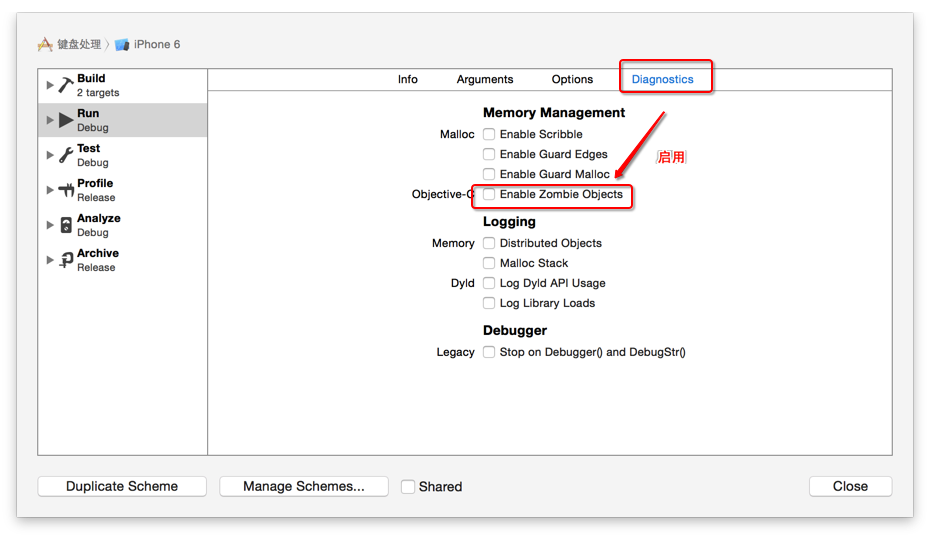

NSNotificationCenter
- 消息通知和消息处理必须在同一个线程
- 非主线程发出的通知，可以执行比较耗时的操作
- 主线程发出的通知，不可以执行比较耗时的操作
runtime 如何实现weak 属性
一个lib包含了很多架构，会打到最后的包里
不会，如果lib中有armv7, armv7s, arm64, i386, x86_64架构，而target architecture选择了armv7s和arm64, 那么只会从lib中link指定的这两个架构的二进制代码
APNS
- 优势：由ios系统进行长连接替代
lldb 常用的调试命令
- po: 打印对象，会调用对象的description方法
- expr: 动态执行表达式
- print: 打印命令
- bt: 答应调用堆栈
- br l : 断点列举
如何调试BAD_ACCESS
- 开启僵尸对象调试功能 
method swizzling(hook function)
方法交换，每个类都有一个方法列表，存放着方法名字和方法实现的映射关系 交换方法的几种实现方式
- method_exchangeImplementations 交换两个方法的实现
- class_replaceMethod 替换方法的实现
- method_setImplementation 直接设置某个方法的IMP